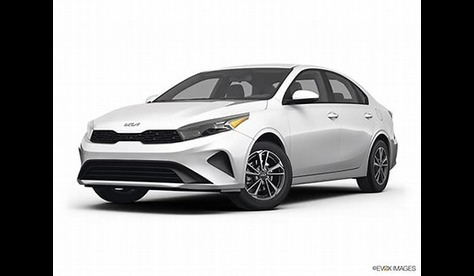
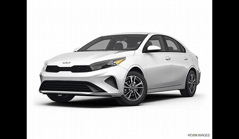
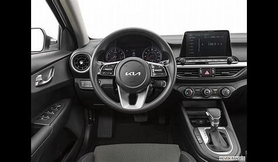
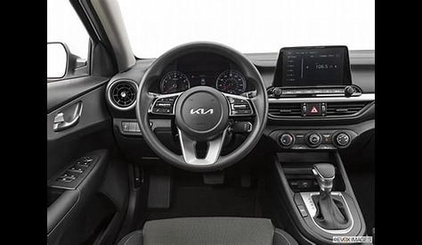

Kia Forte

 

 

Specifications
- Kia
- Forte
- 2024
- Red, White, Signature color
- 2.0L
- Gasoline
- 8.2 l
Price Break-down
- OG Price: $22,595
- Insurance: $3,000
- Tax: $1,500
Engine:
A naturally aspirated 2.0L four-cylinder makes 147 horsepower and 132 lb-ft of torque while a turbocharged 1.6L mill
can muster 201 ponies and roughly a like amount of twist. The non-turbo gets a soul-crushing continually variable transmission but the more powerful engine is paired with a seven-speed dual-clutch automatic.....
Drive Type: FWD (Front Wheel Drive)
Seating Capacity: 5
Mileage: Estimated Fuel Economy for the 2024 Kia Forte City 8.2 L/100 km Highway 6 L/100 km Actual mileage may vary with options, driving conditions, driving habits, and vehicle's condition.
Common complaints include issues with the CVT transmission, problems with interior materials, and below-average fuel efficiency compared to competitors.
Forte seems to appeal to those seeking an economical car, though potential buyers should be aware of its limitations in terms of interior quality and service experience.